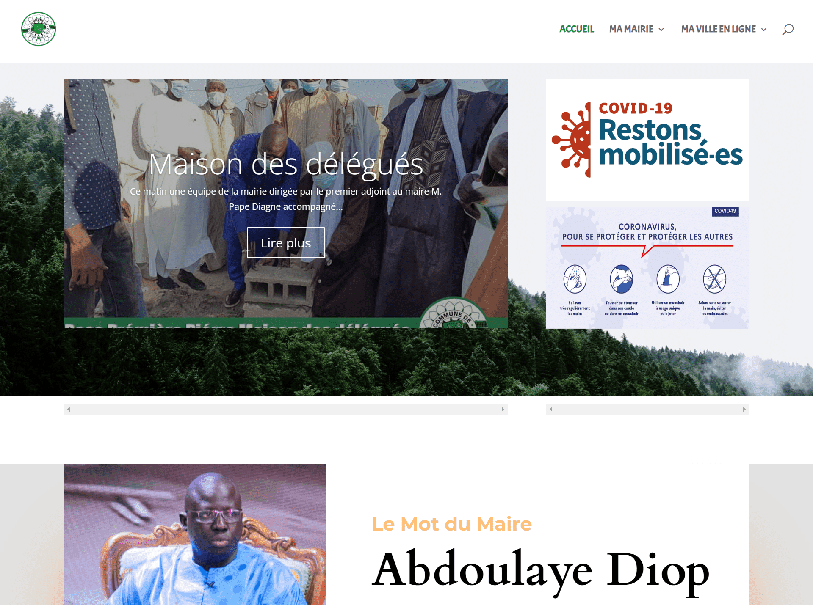

Cartographie
PNB-SN
Participation chez Idyal SA à la cartographie des chantiers et installations de biodigesteurs du Programme National de Biogaz avec l’API Google Maps.
Web public
Réalisation du site officiel de la mairie de Guinaw Rails Sud avec WordPress/CMS et interventions sur d’autres sites institutionnels.
Chez Kheweul.Com, assistance aux clients pour la configuration de serveurs web et le déploiement de sites statiques.
